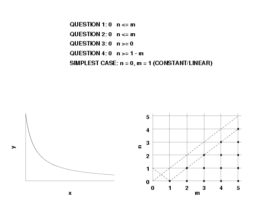
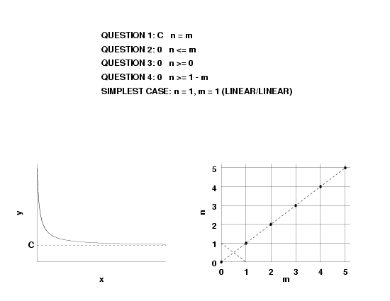
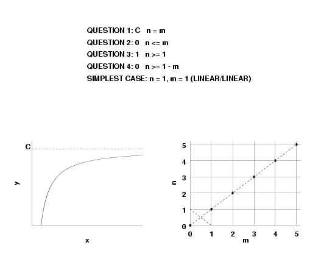
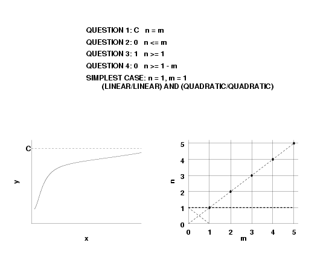
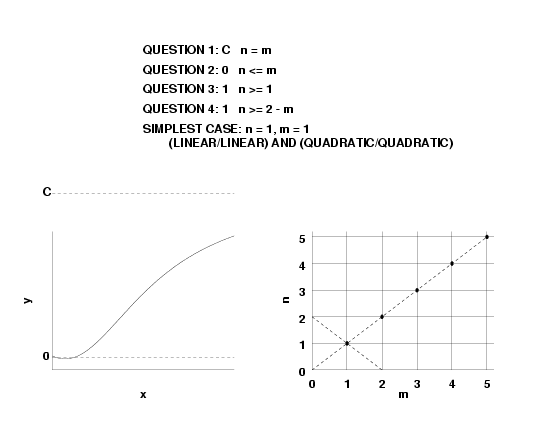
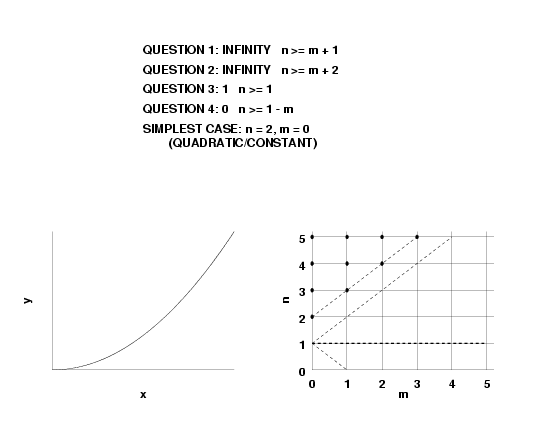
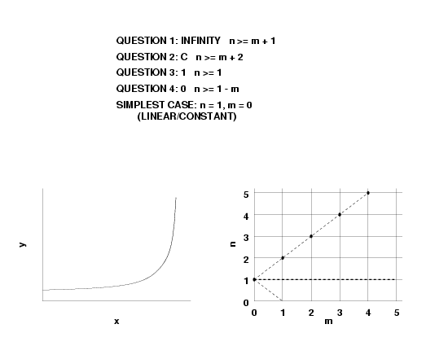
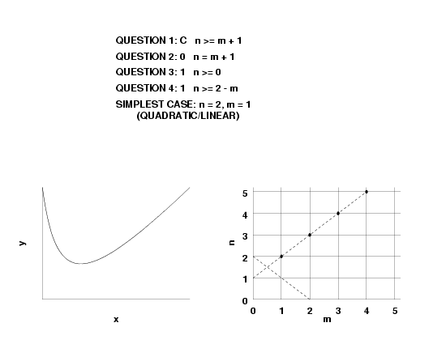

|
4.
Process Modeling
4.8. Some Useful Functions for Process Modeling 4.8.1. Univariate Functions 4.8.1.2. Rational Functions
|
|||
| General Question |
A general question for rational function models is:
|
||||||||||||||||
| Four Questions |
To answer the above broad question, the following four
specific questions need to be answered.
Each of these questions is addressed separately below. |
||||||||||||||||
| Question 1: What Value Should the Function Have at \(x=\infty\)? |
Given the rational function,
$$ R(x) = \frac{P_n(x)} {P_m(x)} $$
or
$$ y = \frac{a_{n}x^{n} + a_{n-1}x^{n-1} + ... + a_{2}x^{2} + a_{1}x + a_{0}}
{b_{m}x^{m} + b_{m-1}x^{m-1} + ... + b_{2}x^{2} + b_{1}x + b_{0}} \, , $$
then asymptotically,
$$ R(x) \approx \left(\frac{a_n}{b_m}\right)x^{n-m} \, . $$
From this, it follows that:
|
||||||||||||||||
| Question 2: What Slope Should the Function Have at \(x=\infty\)? |
The slope is determined by the derivative of a function.
The derivative of a rational function is
$$ R'(x) = \frac{P_m(x)P'_n(x) - P_n(x)P'_m(x)} {[P_m(x)]^2} \, ,$$
with
$$ \begin{eqnarray}
P_n(x) &=& a_0 +a_1x + ... + a_nx^n \\
&=& \\
P'_n(x) &=& a_1 + 2a_2x + ... + na_nx^{n-1} \\
&=& \\
P_m(x) &=& b_0 + b_1x + ... + b_mx^m \\
&=& \\
P'_m(x) &=& b_1 + 2b_2x + ... + mb_mx^{m-1} \, .\\
\end{eqnarray} $$
Asymptotically,
$$ R'(x) \approx (n - m)\left(\frac{a_n} {b_m}\right)x^{n-m-1} \, .$$
From this, it follows that
|
||||||||||||||||
| Question 3: How Many Times Should the Function Equal Zero for Finite \(x\)? |
For finite \(x\), \(R(x)=0\)
only when the
numerator polynomial, \(P_n\),
equals zero.
The numerator polynomial, and thus \(R(x)\) as well, can have between zero and \(n\) real roots. Thus, for a given \(n\), the number of real roots of \(R(x)\) is less than or equal to \(n\). Conversely, if the fitted function \(f(x)\) is such that, for finite \(x\), the number of times \(f(x)=0\) is \(k_3\), then \(n\) is greater than or equal to \(k_3\). |
||||||||||||||||
| Question 4: How Many Times Should the Slope Equal Zero for Finite \(x\)? |
The derivative function, \(R'(x)\),
of the rational function will equal zero when the numerator polynomial
equals zero. The number of real roots of a polynomial is between
zero and the degree of the polynomial.
For \(n \ne m\), the numerator polynomial of \(R'(x)\) has order \(n + m - 1\). For \(n = m\), the numerator polynomial of \(R'(x)\) has order \(n + m - 2\). From this, it follows that
|
||||||||||||||||
| Tables for Determining Admissible Combinations of \(m\) and \(n\) |
In summary, we can determine the admissible combinations of \(n\) and \(m\)
by using the following four tables to generate an \(n\) versus \(m\)
graph. Choose the simplest (\(n, m\))
combination for the degrees of the intial rational function model.
|
||||||||||||||||
| Examples for Determing \(m\) and \(n\) | The goal is to go from a sample data set to a specific rational function. The graphs below summarize some common shapes that rational functions can have and shows the admissible values and the simplest case for \(n\) and \(m\). We typically start with the simplest case. If the model validation indicates an inadequate model, we then try other rational functions in the admissible region. | ||||||||||||||||
| Shape 1 |  | ||||||||||||||||
| Shape 2 |  | ||||||||||||||||
| Shape 3 | |||||||||||||||||
| Shape 4 |  | ||||||||||||||||
| Shape 5 | |||||||||||||||||
| Shape 6 |  | ||||||||||||||||
| Shape 7 |  | ||||||||||||||||
| Shape 8 |  | ||||||||||||||||
| Shape 9 |  | ||||||||||||||||
| Shape 10 |  |

{kind=link}
{kind=link}
{kind=link}
{kind=link}
{kind=link}
{kind=link}
{kind=link}
{kind=link}
{kind=link}
{kind=link}